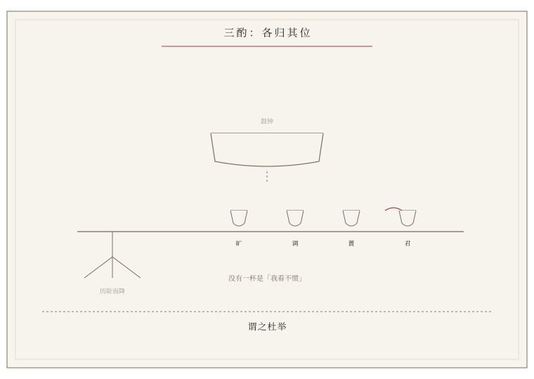

檀弓下 · 四·四十八 · 第 373 课
知悼子卒，未葬。平公饮酒，与群臣燕。师旷、李调侍，鼓钟。杜蕢自外来，闻钟声，曰：「安在？」曰：「在寝。」杜蕢入寝，历阶而升，酌，曰：「旷饮斯。」又酌，曰：「调饮斯。」又酌，堂上北面坐饮之。降，趋而出。平公呼而进之曰：「蕢，曩者尔心或开予，是以不与尔言。尔饮旷何也？」曰：「子卯不乐。知悼子在堂，斯其为子卯也大矣。旷也大师也，不以诏，是以饮之也。」「尔饮调何也？」曰：「调也，君之亵臣也，为一饮一食，亡君之疾，是以饮之也。」「尔饮何也？」曰：「蕢也，宰夫也。非刀匕是共，又敢与知防，是以饮之也。」平公曰：「寡人亦有过焉，酌而饮寡人。」杜蕢洗而扬觯。公谓侍者曰：「如我死，则必无废斯爵也。」至于今，既毕献，斯扬觯，谓之杜举。
说什么事：晋大夫知悼子死了，尚未下葬。晋平公饮酒，与群臣燕乐，师旷、李调陪侍，奏钟。杜蕢从外面来，听见钟声，问「在哪」，答「在寝」。杜蕢入寝，沿阶而上，斟一杯，说「旷，喝了这杯」；又斟一杯，说「调，喝了这杯」；再斟一杯，自己在堂上朝北坐下喝了。随后下阶，快步而出。平公叫住他问故，他一答：旷为大师而不告君，故罚；调为近臣而忘君之忌，故罚；自己是宰夫而越职言事，故自罚。平公说：「寡人也有过，斟来罚寡人。」杜蕢洗觯举而献君。平公对侍者说：「若我死了，这酒器不可废。」直到今日，献毕之后仍举此觯，称为「杜举」。
落在哪一层：以「职」量礼。论规谏不靠热心，靠各人守住自己的位置。
为何编在此位：上节论冢宰代政，此节论宰夫越职。一在其位而代，一不在其位而言。此卷以「位」始，亦以「位」终。
【经】知悼子卒，未葬。平公飲酒，與群臣燕。師曠、李調侍，鼓鐘。杜蕢自外來，聞鐘聲，曰：「安在？」曰：「在寢。」杜蕢入寢，歷階而升，酌，曰：「曠飲斯。」又酌，曰：「調飲斯。」又酌，堂上北面坐飲之。降，趨而出。平公呼而進之曰：「蕢，曩者爾心或開予，是以不與爾言。爾飲曠何也？」曰：「子卯不樂。知悼子在堂，斯其為子卯也大矣。曠也大師也，不以詔，是以飲之也。」「爾飲調何也？」曰：「調也，君之褻臣也，為一飲一食，亡君之疾，是以飲之也。」「爾飲何也？」曰：「蕢也，宰夫也，非刀匕是共，又敢與知防，是以飲之也。」平公曰：「寡人亦有過焉，酌而飲寡人。」杜蕢洗而揚觶。公謂侍者曰：「如我死，則必無廢斯爵也。」至於今，既畢獻，斯揚觶，謂之杜舉。
【注】悼子，晉大夫荀盈，魯昭九年卒。／平公，晉侯彪。／侍，與君飲也。《燕禮記》曰：「請旅侍臣。」／樂作也。《燕禮》賓入門奏《肆夏》，既獻而樂闋，獻君亦如之。／怪之也。杜蕢或作屠蒯。／燕於寢。／三酌皆罰。／曩，曏也，謂始來入時。開謂諫爭有所發起。／子卯不樂，紂以甲子死，桀以乙卯亡，王者謂之疾日，不以舉樂為吉事，所以自戒懼。／言大臣喪重於疾日也。《雜記》曰：「君於卿大夫，比葬，不食肉，比卒哭，不舉樂。」／詔，告也。大師典奏樂。／言調貪酒食。褻，嬖也。近臣亦當規君疾憂。／防禁放溢。／聞義則服。／舉爵於君也，《禮》揚作騰。揚，舉也。騰，送也。揚近得之。／欲後世以為戒。／此爵遂因杜蕢為名。畢獻，獻賓與君。
【疏】此一节论君有大臣之丧，不得有作乐饮酒之事。／「蕢也，宰夫也。非刀匕是共，又敢与知防」者，蕢言调是君之嬖亵臣也，当规正君忧疾；言己身是宰夫，亦当规正于君，若非因刀匕是共，又敢与知防谏之事。皇氏云：「非，不也。杜蕢言各忧其事，宰夫不以刀匕是共，乃又敢与谏争，越官侵职，是以饮也。」／「扬作腾」者，谓《燕礼》大射凡举爵皆为媵。此云扬觯，郑云：扬，举也。《燕礼》云媵，故郑云：媵，送也。扬、腾义得两通。但此云「杜举」，「扬」训为「举」，故「扬近得之」。／「至于今」，谓记录之人至于今为记之时，谓之杜举。
知悼子 晋大夫荀盈，谥悼。
平公 晋侯彪。
燕 燕饮，私宴。
鼓钟 奏钟乐。
杜蕢 晋之宰夫。注「或作屠蒯」。
历阶 一级一级沿阶而上。
酌 斟酒。
饮斯 喝了这一杯。此为罚饮。
曩者 方才。
开予 开导我。
子卯 甲子、乙卯两日。注云纣以甲子死、桀以乙卯亡，谓之疾日。
亵臣 近幸之臣。
亡君之疾 忘君之忌讳。亡，忘也。
刀匕是共 供给刀匕，即宰夫之本职。共，供。
与知防 参与规谏防闲之事。
扬觯 举觯。觯，酒器。
杜举 因杜蕢而得名之礼。
知悼子死了，尚未下葬。晋平公饮酒，与群臣燕乐，师旷、李调陪侍，奏钟。杜蕢从外而来，听见钟声，问「在哪」，答「在寝」。杜蕢入寝，沿阶而上，斟一杯说「旷，喝了这杯」；又斟一杯说「调，喝了这杯」；再斟一杯，自己在堂上朝北坐饮。随后下阶，快步而出。平公叫住他问故，他一答：旷为大师而不告君，故罚；调为近臣而忘君之忌，故罚；自己是宰夫而越职言事，故自罚。平公说：「寡人也有过，斟来罚寡人。」杜蕢洗觯举而献君。平公对侍者说：「若我死了，这酒器不可废。」直到今日，献毕之后仍举此觯，称为「杜举」。
此章是一个人的一场行动：进来、斟三杯、喝完、出去。
三杯各有其罪，各归其位。而第四杯，是君自己认的。
最后留下的不是话，是一只酒器。
第一层 知悼子在堂：君不当举乐 注引《杂记》：「君于卿大夫，比葬，不食肉，比卒哭，不举乐。」
故此时鼓钟，非小节。杜蕢「闻钟声」而问「安在」，一问便见其事之不当。
第二层 子卯不乐：疾日之忌 注云纣以甲子死、桀以乙卯亡，王者谓之疾日，「不以举乐为吉事，所以自戒惧」。
此忌之义不在鬼神，在「自戒」：每逢此日，提醒自己「何以至于亡」。
故子卯之忌，是一年数次的自我警醒，不是迷信。
第三层 「斯其为子卯也大矣」：轻重之辨 大臣在堂未葬，其重远过子卯。
杜蕢用一条人人皆知的忌日，去量一件人人忽略的事：用一个小的尺度，照出一个大的失。
这是礼学常用的手法：不立新条，只借旧条。
第四层 三酌各归其位 罚旷，因其为大师典乐而不诏告，是失职。 罚调，因其为近臣，当规君之疾忧，却贪一饮一食，是失分。 自罚，因其为宰夫，职在刀匕，却越职与知防，是越位。
三杯三罪，没有一杯是「我看不惯」。 此一节最见古人对「谏」的讲究：先各归其位，再各责其失。
第五层 自罚：谏者先责己 第三杯是自己喝，理由是自己越职。
此一动作，使前两杯立住了：一个不肯自罚的人，罚人便成气焰。
今之批评他人者，多缺这一杯。
第六层 寡人亦有过：闻义则服 注云「闻义则服」。
平公不问「你凭什么」，也不辩「我不过在燕饮」，只一句「寡人也有过」。
此一句，使一场冲突转成一场礼。 上位者肯自认其过，下位者的直言才有落处。
第七层 扬觯与杜举：以器为戒 平公命「如我死，则必无废斯爵」，此后献毕必举此觯，谓之杜举。
一只普通的酒杯，因一次直言，成了万世的记号。
礼之记念，不立碑而用器。 碑在门外，器在手中；手边之物，日日可见。
与今日何干 今之组织，谏言多无效，非因无人敢言，因无人自罚、无人认过。
此章给三步：各归其位、各责其失、上位者先认一句。三步行，则一只杯子也能记事。
| 左 | 右 |
|---|---|
| 知悼子在堂 | 大臣未葬 |
| 鼓钟 | 君不当举乐 |
| 子卯不乐 | 疾日自戒 |
| 斯为大矣 | 大臣之丧重于疾日 |
| 饮旷 | 大师失诏 |
| 饮调 | 亵臣忘君之疾 |
| 自饮 | 宰夫越职 |
| 寡人有过 | 闻义则服 |
| 杜举 | 以器为戒 |
画一座堂的侧视，堂上悬一口钟，钟下无人。堂前的阶上，画一人形正沿阶而下，衣角扬起，示疾行之状。堂内一案，案上并排四只酒器，前三只倾倒欲空，最右一只立着且满。案后画一人形端坐，面前空着，双手收在膝上。不画文字。赭色只用在那只立着的酒器口沿。
